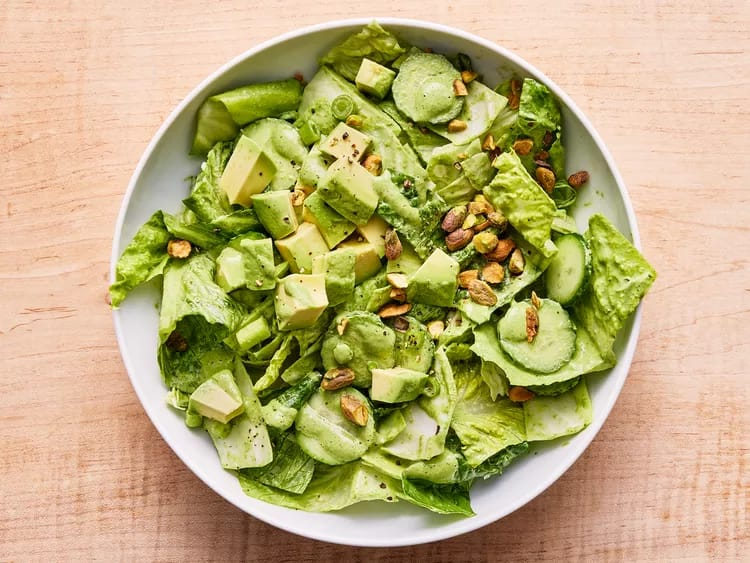

Green Goddess Salad

Description
A simple romaine salad topped with classic green goddess dressing made with mayonnaise, parsley, spinach, basil, tarragon and lemon juice
Ingredients
Dressing
- 1 cup baby spinach
- 1 cup coarsely chopped fresh flat-leaf parsley
- ⅓ cup loosely packed fresh basil leaves
- 3 tablespoons chopped fresh chives
- 2 tablespoons coarsely chopped tarragon leaves
- ½ medium shallot, peeled, coarsely chopped
- 1 small garlic clove, peeled and chopped
- ½ teaspoon anchovy paste
- ¼ cup fresh lime juice (from 2 medium limes)
- 6 tablespoons olive oil
- ½ cup mayoinnaise
- ¾ teaspoon kosher salt
Salad
- 4 cups chopped green cabbage
- 4 cups chopped hearts of romaine
- 3 medium Persian cucumbers, sliced
- ½ cup thinly sliced onions
- 1 medium ripe avocado, peeled and chopped
- ¼ chopped roasted, salted pistachios
Steps
- Combine spinach, parsley, basil, chives, tarragon, shallot, garlicm anchovy paste, and lime juice in a high-powered blender;
blend and slowly add oil through top opening of blender until mixture is smooth, about 1 minute, scraping down sides if needed.
Add mayonnaise and salt; blend until smooth. Cover and chill until ready to serve
- Combine cabbage, romaine, cucumber, and scallions in a large bowl; add 2/3 cup of the dressing and toss to evenly coat.
Divide between 4 bowls and top each bowl with avocado and 1 tablespoon of the pistachios. Serve immediately with reimaining
dressing